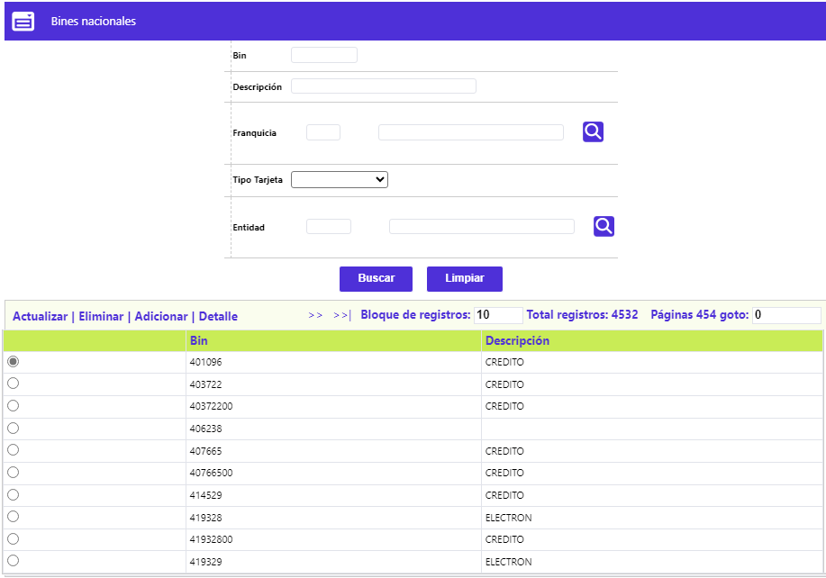
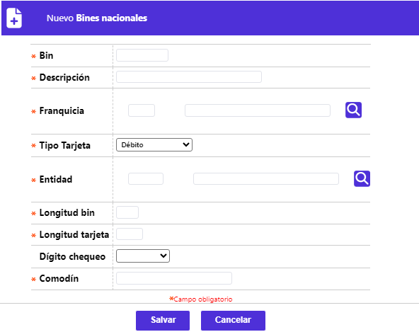
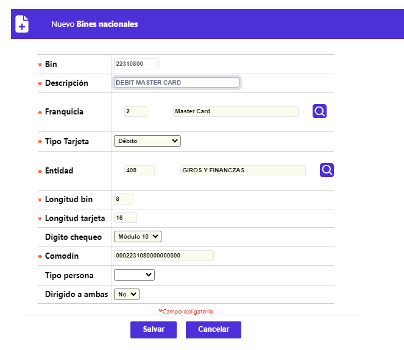

|
Bines Nacionales |
Esta función habilita la consulta y mantenimiento de la tabla que almacena toda la información necesaria en la validación de transacciones realizadas con tarjetas emitidas por las entidades financieras nacionales (Bines nacionales), mantenimiento que se realiza a través del cargue de la cinta enviada periódicamente por el operador (franquicia), y así mismo permite la inclusión de los datos de los bines asociados a las marcas privadas. La codificación aquí contenida, es utilizada como base en la conformación o creación de los diferentes productos ofrecidos por la entidad.

El formulario contiene las opciones Actualizar, Eliminar, Adicionar, Detalle y la opción Ir a Filtro.
Adicionar: Si el usuario invoca la opción Adicionar se despliega un formulario con los siguientes campos:

|
Bin |
Campo alfanumérico obligatorio que almacena, en un máximo de 8 caracteres, el Bank Identification Number BIN o prefijo correspondiente a cada producto por entidad financiera o los de marca privada. |
|
Descripción |
En este campo alfanumérico de máximo 30 caracteres, obligatorio, se registra el tipo o nombre del producto de la entidad financiera asociado a cada Bin. |
|
Entidad |
En este campo se selecciona de la lista de valores la entidad financiera emisora de cada producto (Bin). |
|
Tipo tarjeta |
En este campo se selecciona de la lista de valores adjunta, el tipo o clase de tarjeta correspondiente al bin y que puede ser Débito, Crédito, Electron/Maestro, Débito propia, Crédito propia. |
|
Franquicia |
Campo que posee lista de valores de la que se selecciona la franquicia a la que pertenece el bin en particular. |
|
Longitud bin |
Campo numérico de una posición, obligatorio, que ilustra la longitud máxima del bin o prefijo. |
|
Longitud tarjeta |
En este campo numérico de 2 posiciones, obligatorio, se almacena la cantidad máxima de dígitos que componen el número de la tarjeta, usualmente contiene el bin o prefijo. |
|
Dígito chequeo |
Campo que posee lista de valores sobre la cual se puede seleccionar el algoritmo mediante el cual se realiza la verificación del dígito de chequeo. |
|
Comodín |
Campo alfanumérico de 23 dígitos, obligatorio, que facilita la captura de movimiento del canje manual cuando el número de la tarjeta no es legible y permite al sistema validar su dígito de verificación. Se construye adicionándole al Bin o prefijo ene menos uno ceros (donde "n" es la longitud de la tarjeta menos la longitud del bin) y al final el dígito de chequeo obtenido al aplicar el algoritmo asociado, completando así la cantidad de dígitos que componen el número de las tarjetas. |
Actualizar: Si el usuario invoca la opción Actualizar se despliega un nuevo formulario en el cual los únicos campos modificables son: Descrición, Entidad, Tipo tarjeta, Franquicia, Longitud bin, Longitud tarjeta, Dígito de chequeo, y Comodín.

Detalle: Si el usuario invoca la opción Detalle se despliega el siguiente formulario.